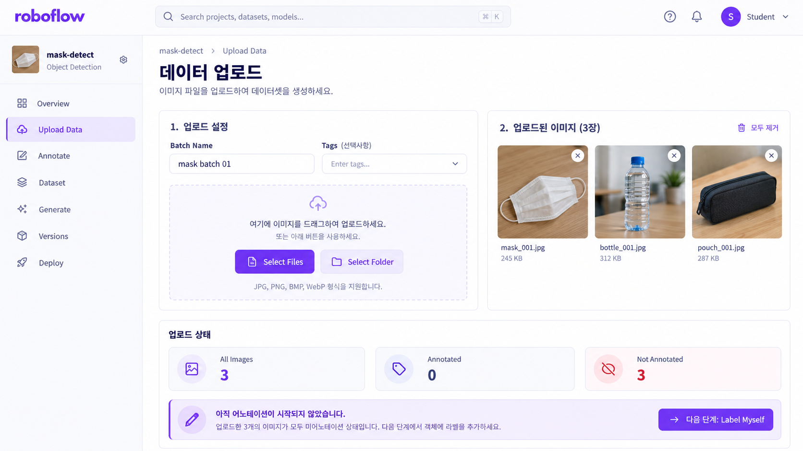

ROBOFLOW · COMPUTER VISION DATASET
Dataset Pipeline · Raw Image Input
Roboflow 03. 이미지 Upload
Select Files · Select Folder · Batch · Upload Data
이전 단원에서 Object Detection Project를 만들었다면, 이번에는 그 빈 Project에 Model 입력이 될 Raw Image를 등록합니다. Image를 선택하고 Upload 상태를 확인한 뒤 Save and Continue로 등록을 확정합니다. 이 시점에는 Image만 있고 Bounding Box와 Class는 아직 없으므로 다음 Annotation 단계로 이어집니다.
학습 목표
-
01
Image Upload가 전체 Roboflow Dataset Pipeline에서 어떤 역할을 하는지 설명한다.
-
02
Select Files와 Select Folder의 차이를 구분한다.
-
03
Upload Batch와 Deep Learning Training Batch를 구분한다.
-
04
Batch Name과 Tags가 Upload 화면에서 어떤 관리 정보를 나타내는지 이해한다.
-
05
All Images, Annotated, Not Annotated의 상태를 Dataset 관점에서 읽는다.
-
06
Save and Continue 전후의 Dataset 상태 변화를 설명한다.
-
07
Upload와 Annotation을 입력 데이터와 정답 데이터의 관점에서 구분한다.
-
08
Upload가 다음 Bounding Box/Class Annotation과 어떻게 연결되는지 설명한다.
01 · LESSON GOAL
이번 단계에서는 무엇을 만드는가?
이번 단계에서는 Bounding Box를 그리지 않습니다. 먼저 Object Detection Dataset의 입력 Image를 Roboflow Project 안으로 가져옵니다.
Project 생성
Image Upload
Annotation
Model의 입력이 될 Image를 준비합니다. 정답 Annotation은 아직 만들지 않습니다.
02 · PIPELINE POSITION
Roboflow 전체 Workflow에서의 위치
03 · CORE CONCEPTS
Upload 화면의 핵심 용어
| 용어 | 의미 | 기억할 질문 |
|---|---|---|
| Upload Data | Project에 Image를 등록하는 화면 | 어디에서 Image를 넣을까? |
| Select Files | 개별 Image 파일 선택 | 몇 장만 직접 고를까? |
| Select Folder | Folder 단위 Image 선택 | 정리된 Folder를 가져올까? |
| Batch | 함께 Upload하는 Image 묶음으로 이해 | 이 Image 묶음을 어떻게 관리할까? |
| Batch Name | Upload 묶음을 식별하는 이름 | 이 Upload 묶음의 이름은? |
| Tags | Upload 화면에 존재하는 관리용 정보 필드 | Image를 어떤 정보로 구분할까? |
| All Images | 현재 Image 전체 상태 | 몇 장이 있는가? |
| Annotated | Annotation이 있는 Image 상태 | 정답이 있는 Image는? |
| Not Annotated | 아직 Annotation이 없는 Image 상태 | 정답 작업이 필요한 Image는? |
| Save and Continue | 현재 Upload를 확정하고 다음 단계로 진행 | Upload를 언제 완료할까? |
04 · VISUAL UNDERSTANDING
Image만 들어왔고 정답은 아직 없다
Object Detection Project
- Image: X
- Bounding Box: X
- Class: X
Raw Images
Dataset Input 준비
- Image: O
- Bounding Box: X
- Class: X
Upload
=
Input Image 등록
Annotation
=
Bounding Box + Class 정답 작성
05 · SCREEN WALKTHROUGH
교안 화면 따라하기

Upload 화면
- 왼쪽 메뉴
- Upload Data
- Image 선택
- Select Files / Select Folder
- 화면 관리 정보
- Batch Name / Tags
- 현재 상태
- All Images 3 / Annotated 0 / Not Annotated 3
- 완료 버튼
- Save and Continue
- 다음
- Annotate → Label Myself
Image 세 장은 등록되었지만 아직 Bounding Box와 Class가 없으므로 세 장 모두 미Annotation 상태입니다.
06 · SELECT FILES
개별 Image를 선택해서 Upload
언제 이해하기 쉬운가?
보충 설명
Folder 안의 모든 파일이 아니라 일부 Image만 직접 골라 Upload할 때 Select Files 방식으로 이해하면 좋습니다.
07 · SELECT FOLDER
Folder 단위로 Image 선택
mask-images/
├─ image001.jpg
├─ image002.jpg
├─ image003.jpg
├─ image004.jpg
└─ image005.jpgSelect Files와 비교
개별 파일 선택
필요한 파일을 직접 골라 Upload
Folder 단위 선택
정리된 Image 묶음을 Folder 기준으로 Upload
08 · BATCH
Batch — Upload Image 묶음
Upload 화면에
Batch Name과
Create batch instantly UI가 존재합니다.
하지만 교안 본문은 Batch의 세부 사용법을 별도로 설명하지 않습니다.
보충 이해
indoor_01
- image001.jpg
- image002.jpg
- image003.jpg
outdoor_01
- image101.jpg
- image102.jpg
- image103.jpg
Training Batch와 구분
Dataset 관리
함께 Upload한 Image 묶음
Model 학습
한 학습 Step에서 처리할 Sample 묶음
Upload Batch
≠
Training Mini-batch
10 · DATASET STATUS
All Images / Annotated / Not Annotated
전체 Image
정답 Annotation이 있는 Image
아직 정답이 없는 Image
11 · SAVE AND CONTINUE
Upload 작업을 확정하고 다음 단계로
12 · DATASET STATE CHANGE
이번 단원이 끝났을 때 Dataset 상태
13 · MACHINE LEARNING CONNECTION
X / y 관점으로 연결하기
이해를 위한 보충 비교
Images
이번 Upload 단계에서 준비
Bounding Box + Class
다음 Annotation 단계에서 준비
Upload 완료
→
X = O
/
y = X
Annotation 완료
→
X = Image
/
y = Bounding Box + Class
14 · IMAGE QUALITY CHECK
Upload 전후 확인하면 좋은 Dataset 품질
실무 보충
Image의 다양성, 중복 여부, 촬영 조건, 실제 서비스 환경의 대표성도 함께 중요합니다.
15 · COMMON MISTAKES
초보자가 자주 하는 실수
Select만 하고 Save and Continue를 누르지 않음
Image 선택과 Upload 확정은 구분합니다.
Select Files와 Select Folder를 다른 Dataset Type으로 생각
둘 다 Image를 Project에 추가하는 방법입니다.
Upload Batch와 Training Batch 혼동
Dataset 관리 묶음과 Model 학습 묶음은 다릅니다.
Upload 후 Annotation까지 끝났다고 생각
교안 화면도 Annotated 0 / Not Annotated 3 상태입니다.
Upload하면 Class도 자동 생성된다고 생각
Class는 다음 Annotation Editor에서 만듭니다.
Image 수만 많으면 좋은 Dataset이라고 생각
중복·다양성·품질·촬영 조건도 함께 봅니다.
잘못된 Project에 Image Upload
여러 Project를 운영할 때 현재 Project를 먼저 확인합니다.
Batch Name과 Class Name 혼동
Batch는 Upload 묶음, Class는 객체 Category입니다.
16 · UI STATUS / ERROR READING
Error Popup보다 Upload 상태를 읽는다
첨부 교안에는 Upload 과정의 실제 Error Popup 사례는 없습니다. 따라서 아래 표는 교안 오류 로그가 아니라 실습 상태를 점검하기 위한 보충 진단 기준입니다.
| 증상 | 먼저 확인 |
|---|---|
| Image Preview가 없음 | 실제로 파일/Folder를 선택했는가? |
| 예상보다 Image 수가 적음 | All Images 숫자와 선택 대상을 비교 |
| Annotated = 0 | Upload 직후라면 정상일 수 있음 |
| Not Annotated가 많음 | 다음 Annotation 작업이 아직 필요함 |
| Project에 Image가 없음 | Save and Continue까지 진행했는가? |
| 엉뚱한 Dataset에 Image가 들어감 | 현재 Project 이름 확인 |
17 · PRACTICAL CONNECTION
실무에서 Upload는 Data Collection과 연결된다
실무 보충
Batch로 출처를 관리한다면
studio_camera_a
실내 · Camera A
outdoor_mobile
야외 · Mobile
low_light
저조도 환경
보충 · Split Leakage를 미리 생각하기
같은 Video의 연속 Frame처럼 거의 동일한 Image가 나중에 Train / Valid / Test에 나뉘어 들어가면 실제보다 성능이 높아 보일 수 있습니다.
18 · INTERVIEW / REVIEW
면접 포인트
Q01. Roboflow의 Upload Data 단계는 무엇입니까?
Object Detection Model의 입력이 될 Raw Image를 Project에 등록해 이후 Annotation할 수 있도록 준비하는 단계입니다.
Q02. 교안에서 Image를 선택하는 두 방법은 무엇입니까?
Select Files와 Select Folder입니다.
Q03. Select Files와 Select Folder의 차이는 무엇입니까?
Select Files는 개별 파일을 선택하고, Select Folder는 Folder 단위로 Image를 선택하는 방식으로 이해할 수 있습니다.
Q04. Image 선택 후 무엇을 누릅니까?
Save and Continue입니다.
Q05. Upload 다음 단계는 무엇입니까?
Annotate이며, 교안에서는 Label Myself를 선택합니다.
Q06. Upload 직후 Bounding Box가 있습니까?
없습니다. Image만 등록되며 Bounding Box와 Class는 다음 Annotation 단계에서 작성합니다.
Q07. 교안 Screenshot의 All Images 수는 얼마입니까?
3입니다.
Q08. Annotated 수는 얼마입니까?
0입니다.
Q09. Not Annotated 수는 얼마입니까?
3입니다.
Q10. 왜 모두 Not Annotated입니까?
아직 Bounding Box와 Class 정답을 작성하지 않았기 때문입니다.
Q11. Batch는 무엇입니까?
이번 Upload 화면에는 Batch Name과 Create batch instantly UI가 존재합니다. 교안은 상세 정의를 설명하지 않지만, Upload Image 묶음을 관리하는 개념으로 이해할 수 있습니다.
Q12. Upload Batch와 Training Batch는 같은 개념입니까?
아닙니다. Upload Batch는 Dataset 관리 묶음이고, Training Batch는 Model 학습에서 한 번에 처리할 Sample 묶음입니다.
Q13. Tags는 이번 교안에서 어떻게 사용합니까?
Upload 화면에 Tags 필드는 보이지만, 교안은 구체적인 사용 방법을 설명하지 않습니다.
Q14. Upload를 X/y 관점으로 보면 무엇입니까?
보충적으로 보면 X인 Image를 준비하는 단계이고, y인 Bounding Box와 Class는 다음 Annotation 단계에서 준비합니다.
Q15. 모든 Image가 Annotation되면 이후 어떤 상태가 됩니까?
교안의 이후 단계에서는 모든 Image Labeling이 완료되면 Unannotated가 0이 됩니다.
20 · SOURCE GUIDE
교안 원문과 보충 내용을 구분해서 읽기
교안 직접 내용
- Upload Data
- Select Files
- Select Folder
- Save and Continue
- Label Myself 연결
- Upload 화면 Batch Name / Tags UI
- All Images 3
- Annotated 0
- Not Annotated 3
이해·실무 보충
- Files와 Folder 선택 상황 비교
- Batch 운영 예시
- Tag Metadata 예시
- X / y 비교
- 중복 Image 점검
- 촬영 조건 다양성
- Split Leakage